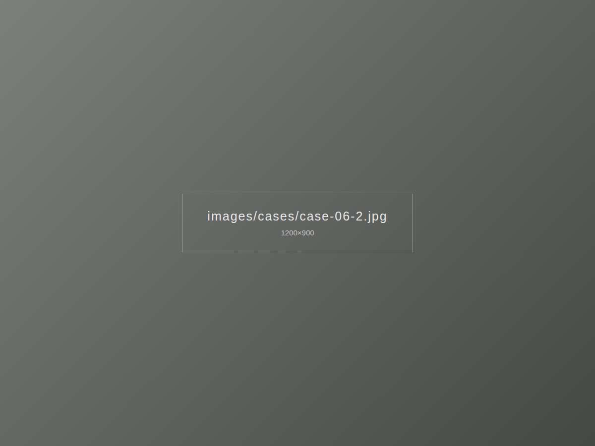
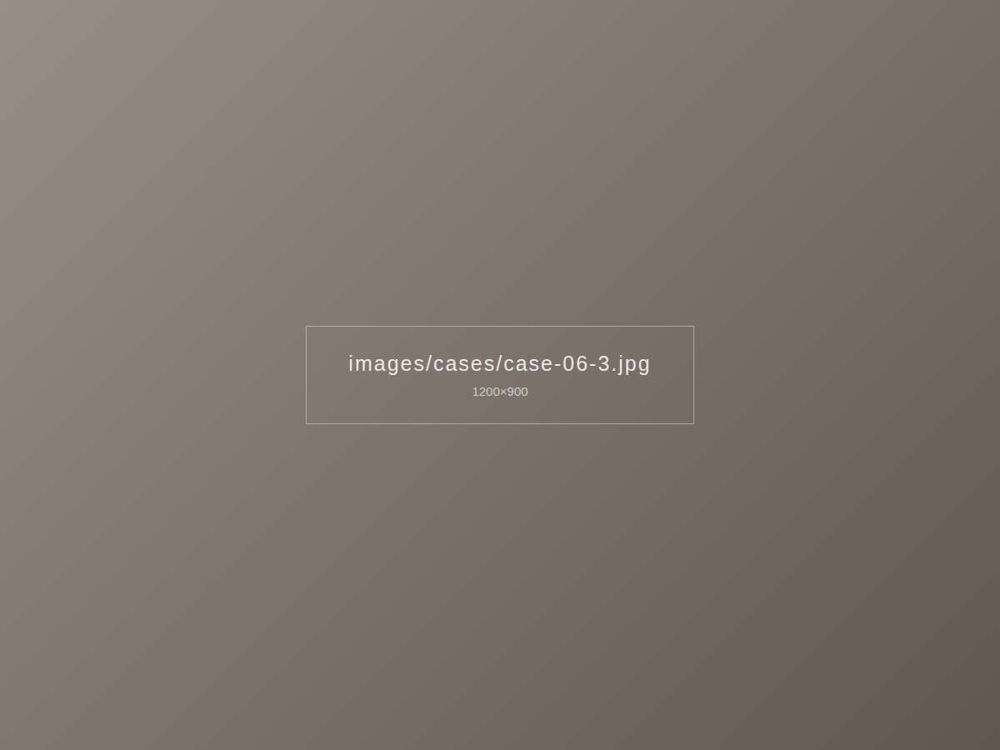

이런 고민이 있었어요
서향 전면창이라 오후 시간대에 손님 자리로 햇빛이 강하게 들어오는 카페였습니다. 바깥에서 보이는 매장 분위기는 그대로 살리고 싶어 하셨어요.



이렇게 해결했어요
바깥 풍경이 비치는 선스크린 원단 롤스크린을 창마다 달았습니다. 영업에 방해가 없도록 마감 후 저녁 시간에 시공했습니다.
시공 포인트
- 밖이 보이는 선스크린 원단으로 개방감 유지
- 창마다 따로 조절해 자리별로 빛 관리
- 영업 마감 후 야간 시공
비슷한 집이라면
서울 송파구 지역, 비슷한 구조의 집이라면 이 사례 사진을 보여주시며 상담받으셔도 좋아요.
롤스크린 자세히 보기 · 송파 시공 안내